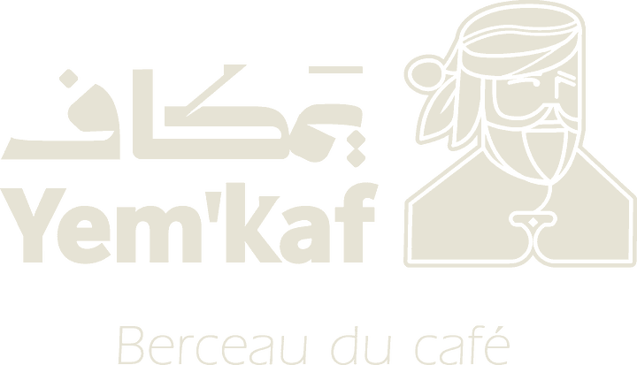

Date de la soirée retenue : jeudi 26 novembre, 19 h–22 h. J’ai compris « une semaine après » comme une semaine après le soft opening du 20. Le jeudi garde le rituel du cupping et place la soirée la veille de l’ouverture de l’e-shop : les invités en sont les premiers clients. Dites-moi si vous pensiez au vendredi 27 ou au 3 décembre.
Rétroplanning jusqu’à Noël
Chaque ligne a un responsable. Les dates en gras sont des échéances fermes.
- ven. 6 nov.Liste VIP de 120 noms et fiche GoogleSix segments (ci-dessous), objectif 60 présents. Fiche Google Business Profile créée avec photos et « Ouverture le 20 novembre ». Yousif
- lun. 9 nov.Réserver le photographe et commander les échantillonsPhotographe 19 h–21 h le 26 (300 à 500 €). 60 doses dégustation de 30 g en sachet kraft étiqueté. Yousif · Khaled
- jeu. 12 nov.Save-the-date envoyéDeux semaines avant : e-mail personnalisé par segment, réponse demandée avant le lundi 23. Yousif
- ven. 13 nov.Dossier presse cadeaux de Noël25 rédactions en ligne : photo du Coffret Prestige, prix, histoire, proposition d’échantillon. Yousif
- lun. 16 nov.Teasing Instagram et quartierNeuf publications en grille (la devanture, le Qishr, le personnage, les terrasses du Haraz). 500 flyers rue du Renard, rue de la Verrerie, rue Saint-Merri. Yousif · Amer
- 17–19 nov.Services à blancVoisins, commerçants, amis, contre un avis Google. Premières photos en situation. Toute l’équipe
- ven. 20 nov.Soft openingSans presse. Tasse de Qishr offerte à chaque nouveau client, demande d’avis à chaque habitué. Toute l’équipe
- lun. 23 nov.Relance des invités et brief de l’équipeRelance personnelle des non-répondants (SMS ou appel). Répartition des rôles le soir de l’événement. Yousif · Amer
- mer. 25 nov.Répétition de la soiréeDéroulé complet, cupping chronométré, test du son et des carafes, mise en place des tables. Khaled · Chef barista
- jeu. 26 nov.Soirée d’ouverture officielle19 h–22 h, boutique fermée au public à 18 h 30. Déroulé ci-dessous. Toute l’équipe
- ven. 27 nov.Ouverture de l’e-shopBlack Friday sans remise : livraison offerte sur le premier coffret, carte terroir dans le colis. E-mail d’accès en avant-première aux invités de la veille. Yousif
- lun. 30 nov.Remerciements et retombéesE-mail de merci avec 3 photos à chaque invité, relance presse avec les meilleures images. Yousif
- mar. 1er déc.Campagne cadeaux d’entreprise40 entreprises à moins de 500 m, commande avant le 10 décembre. Annonce de la dernière date de commande web pour Noël. Khaled · Yousif
- jeu. 3 déc.Premier cupping pro du jeudiLes torréfacteurs et acheteurs rencontrés à la soirée, 15 h–16 h 30. Khaled
- ven. 18 déc.Dernière commande web livrée avant NoëlRetrait en boutique possible jusqu’au mercredi 23. Yousif
La soirée du 26 novembre
Environ 60 personnes, 25 places assises et le reste debout. Budget hors produits maison : 700 à 900 € (photographe, échantillons, impression).
| Heure | Moment | Qui |
|---|---|---|
| 18 h 30 | Boutique fermée au public, carafes prêtes, playlist, éclairage tamisé | Chef barista, Amer |
| 19 h 00 | Accueil à la porte avec une tasse de Qishr, vestiaire, photo devant la devanture | Yousif, barista senior |
| 19 h 30 | Mot des fondateurs, 3 minutes : pourquoi le Yémen, pourquoi le Marais, depuis 2022 ensemble | Les trois associés |
| 19 h 40 | Cupping guidé de trois terroirs (Harazi, Raymi, invité), par petits groupes de 8 | Khaled, chef barista |
| 20 h 30 | Dégustation Shai Adeni, Sabaya et Maamoul ; démonstration de Qahwa Baydani | Baristas |
| 21 h 00 | Annonce de l’e-shop, QR code d’accès en avant-première ; coffrets en vitrine | Yousif |
| 21 h 45 | Remise d’une dose dégustation de 30 g à chaque invité, au revoir à la porte | Toute l’équipe |

Une soirée au berceau du café
Les fondateurs de Yem’kaf vous invitent à l’ouverture officielle de la première maison de café yéménite de Paris.
Jeudi 26 novembre 2026 · 19 h – 22 h
24 rue du Renard, Paris 4e
Cupping de trois terroirs du Haraz et de Raymah, Qishr et pâtisseries yéménites.
Réponse souhaitée avant le 23 novembre.

Invitations par segment
Un texte par public, à envoyer de la boîte d’un associé (pas d’une adresse générique), avec le carton en image. Remplacez [Prénom].
Fiches des coffrets
Prix et marges du brief, contenu adapté aux noms des sachets (Harazi, Raymi). TVA à 5,5 % si le café domine la valeur du coffret ; l’écrin et le carnet sont des accessoires : faites valider la ventilation par votre cabinet.
Coffret Duo
Deux sachets de terroirs complémentaires (un Harazi, un Raymi), 400 g nets, dans un écrin rigide avec le carnet de voyage sensoriel.
- Coût
- 28,10 € HT
- Marge
- 21,19 € HT · 43,0 %
- Pour qui
- Cadeau de 40 à 60 €, collègues, Saint-Valentin
Coffret Prestige Écrin
Deux grands crus d’altitude (500 g), une boîte de cascara Qishr aux épices et le guide de préparation, 550 g nets.
- Coût
- 44,50 € HT
- Marge
- 30,38 € HT · 40,6 %
- Pour qui
- Clients, partenaires, Aïd, amateurs
Coffret Trois Terroirs
Trilogie d’exploration expédiée à domicile, 600 g nets : Haraz, Raymah et le café invité du mois.
- Coût
- 42,20 € HT
- Marge
- 23,20 € HT · 35,5 %
- Pour qui
- Premier achat en ligne, porte d’entrée de l’abonnement
Grille entreprises proposée. De 10 à 24 coffrets : −5 %. À partir de 25 : −10 % et carte personnalisée offerte. À partir de 50 : bandeau au logo du client. À −10 %, le Duo garde 16,26 € de marge HT (36,7 %). Commande avant le 10 décembre pour Noël.
Les temps forts des 6 mois
| Quand | Moment | Ce qu’on propose |
|---|---|---|
| Jusqu’au 24 déc. | Noël | Coffrets Duo et Prestige, cadeaux d’entreprise, dernière commande web le 18 |
| 6 janv. | Épiphanie | Galette maison miel-cardamome (à valider avec le pâtissier) |
| 1er–14 févr. | Saint-Valentin | Coffret Duo en édition « Toits de Sanaa » |
| ~7 févr. – 9 mars | Ramadan | Test d’ouverture jusqu’à 22 h du jeudi au samedi, box ftour (dattes, Sabaya, Qishr) |
| ~10 mars | Aïd el-Fitr | Coffrets Prestige, précommandes dès le 22 février |
| 28 mars | Pâques | Pâtisserie de saison franco-yéménite |
| 24–26 avr. | Paris Café Festival (à confirmer) | Stand ou masterclass Qishr, collecte d’adresses pour l’e-shop |
| 10–30 mai | Fête des mères | Précommandes de coffrets, en boutique et en ligne |
Canaux et rythme
Trois publications par semaine sur quatre thèmes en rotation : le rituel (Qishr, Shai), le terroir (Haraz, Raymah), le quartier (la devanture, les voisins), l’équipe. Une story par jour de service.
Google Business Profile
Le premier canal d’un café de quartier. Objectif : 30 avis au 26 novembre, 80 fin janvier. Réponse à chaque avis sous 48 h, en signant de son prénom.
E-mail et SMS
Lettre mensuelle par Brevo : le café du mois, un temps fort, une histoire du Yémen. SMS réservé aux clients qui l’ont accepté, jamais le dimanche ni après 20 h. Détails dans le module e-commerce.